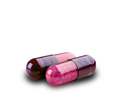

-
Do it yourself workouts
Body building -> Read more
Jogging -> Read more
Boxing -> Read more
-
Weight loss diets
10 pounds a week died -> Read more
Yogurt diet -> Read more
Low carb diet -> Read more
- 
The best option
We’re always hearing how a certain vitamin or herbal supplement will cure a chronic condition or drastically improve the quality of our lives. However, information about dietary supplements is often confusing or unclear. It’s hard to know which offer genuine health benefits and which are merely giving false promises, or worse, running the risk of actually damaging your health.
-

Program exercises
Starting a fitness journey can be intimidating, especially if you're going in without any previous study. If you go to the Internet to find information, you might find yourself smack-dab in the middle of bad logic and bad ideas. It's difficult to sort out the fact from the fiction—especially when the fiction sounds so good..
-

Why fruits?
There's no doubt that eating fruit is important to our overall health and wellbeing. Fruit is healthy for you, we all know that, but, it's good to know that eating it should follow some general guidelines to fully benefit our health. It's just not as simple as putting it into our mouths whenever we feel like it.
-
Healthy eating
Here are three main reasons that will help remind you that eating healthy is the best choice to make for your diet: To provide the necessary nutrients that your body needs to create new cells, clean toxins, and to just function every day! Eating healthy now can help prevent future diseases such as diabetes and cancer.
Copyright © 2016 Calorie King All rights reserved | Design By: Rolland Schnell